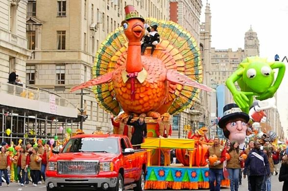

-
Thanksgiving Dinner
The centerpiece of Thanksgiving is a festive meal featuring a roast turkey and traditional side dishes like stuffing, mashed potatoes, cranberry sauce, and pumpkin pie.
-

Parades
Many cities host Thanksgiving Day parades, featuring giant balloons, marching bands, and festive floats. The Macy's Thanksgiving Day Parade in New York City is one of the most famous.
-
Thanksgiving Crafts and Decoration
Families often engage in arts and crafts activities, especially with children. Creating handmade decorations, place cards, or even simple crafts related to the holiday can be a fun way to celebrate.
-
Family Time
Thanksgiving is a time for families to come together. Many people travel long distances to be with their loved ones and enjoy quality time with family members.